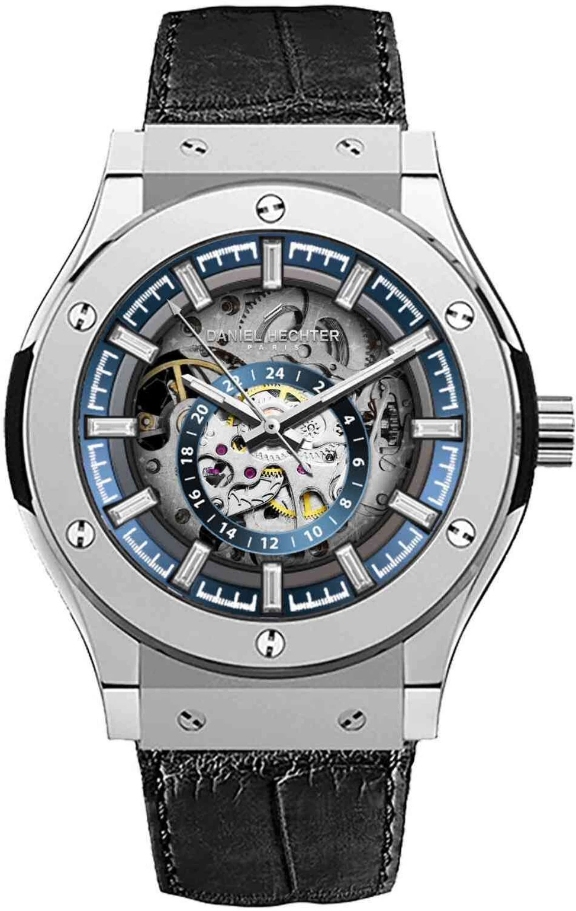

Daniel Hechter DHM1034-33 is a men's casual wristwatch featuring a round blue dial with a black silicone strap. It has an analog display and is water-resistant, making it suitable for everyday use. The watch comes as a single piece (pack of 1) and is designed with a stylish yet comfortable look for casual wear. Display Type: Analog Movement: Digital Typically, an analog watch uses quartz or mechanical movement, not digital movement. You may want to check the product page again to confirm the correct specification.